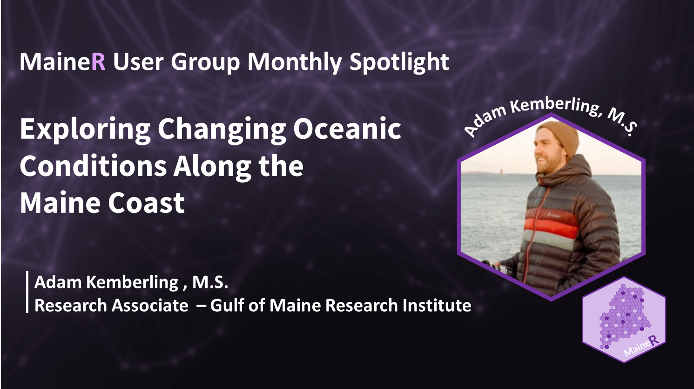

Introduction:
Adam Kemberling is a Research Associate at the Gulf of Maine Research Institute, where he has been contributing his expertise for over four years. Working under the guidance of Dr. Kathy Mills, he is an integral part of the research team focused on understanding the consequences of the rapidly warming Gulf of Maine. His work encompasses tracking sea surface temperature increases, reporting on environmental trends, and exploring the responses of marine species to changing oceanic conditions. Through his research, Kemberling aims to shed light on the complex interactions taking place within marine ecosystems as they adapt to climate change.
1. Discovering R - My Initial Spark:
What got you interested in R?
I was initially blindsided by R as both a concept and a software during a quantitative fisheries class. The professor announced, “Everyone, open R Studio,” and I found myself wondering if I should have already been familiar with the tools as my peers all loaded up their projects. As my studies progressed, it became apparent that mastering R was not just beneficial, but necessary for completing the statistical analyses for my thesis work. Initially, my relationship with R was begrudging. The real turning point came when I started to use R Markdown and ggplot2. These tools transformed my ability to communicate my findings, making it possible to present data and insights more clearly and efficiently. Before learning these tools, I lacked a medium to convey my research effectively. Gaining proficiency in statistics and R gave me not just a new set of skills but also a sense of empowerment in my work, allowing me to tackle new questions and produce work that I was truly proud of.
2. R at Work
Do you use R at work? How?
Yes, I use R extensively in my work at the Gulf of Maine Research Institute. It’s an essential tool for analyzing the vast amounts of data we collect on oceanic conditions, marine species distributions, and other environmental parameters in a reproducible way. With R, I track trends in the rapidly warming Gulf of Maine, report on our findings, and delve into research questions about how marine life is adapting to changes in their habitat. R’s capabilities for statistical analysis and data visualization are crucial for my research. Tools like Quarto and ggplot2 have revolutionized the way I present my data and findings, enabling me to communicate complex scientific information in a clear, comprehensible, and visually appealing manner. This not only supports our team’s internal collaboration but also enhances our ability to share insights with external stakeholders, including academic peers, conservation organizations, and governmental agencies.
3. R for Fun
Do you have any favorite R projects you have worked on in the past?
When I first moved to Maine and began working with my new team, I was encouraged by my mentor to apply for a code sprint that I had come across. Code sprints in the marine ecology space were something I had never seen, nor taken part in and I was nervous that I was both underqualified and not talented enough of a coder. The project was funded by NSF as part of the Coastlines and People Program, and it asked participants to bring a research idea to pitch to the others - ideas focused on using open data to do science related to Coastlines and People. I ended up applying and participating with a group from North Carolina that aimed to train a machine learning model to detect when roads were flooded using live traffic camera feeds. It was a clever idea that leveraged public datasets for a public good and I really enjoyed that. The participants involved were great people, we launched a shiny app to collect labeled training data, and we wrote some good documentation of the experience. It was one of the best experiences I have had collaborating on a project, and it was with people that I otherwise would never have had the opportunity to work with.
4. Beyond Programming
What do you do when you’re not programming?
When I am not programming, my priorities shift towards spending time with my family and indulging in personal hobbies. I have a dog who loves to go for walks and enjoys splashing around at the beach, and a lovely wife who enjoys biking around town with me. I love to cook and make sure there is always something delicious and comforting ready to help us unwind after a long day. Since the pandemic, I have also taken up running more consistently. I have found that running, or doing anything outdoors really offers a refreshing break from the challenges of coding and research. It is a way to get a mental reset that helps me tackle problems I am stuck on. On the weekends, I prefer to be outside, either hiking or simply enjoying the natural beauty of Maine to recharge and find balance.
5. Anticipating Trends
What trends do you see in R language over the next year?
In the coming year, I foresee significant advancements in R’s capabilities for reproducible research and open science, enhancing tools like Quarto for greater transparency in sharing findings. In addition, the R community’s emphasis on collaboration and education will likely lead to an increase in online resources and community projects, lowering barriers for newcomers and fostering knowledge sharing in specialized fields like marine research. Research work has become increasingly data-centric, and I am energized by how the open science community is embracing these tools and increasing our capacity to collaborate.
5. Community and Coding
What is your favorite R event that you have attended?
My favorite R event that I have attended was an RStudio Conference. I had just finished graduate school, was anxious about getting a job, and used this conference to explore alternative career options and broaden my big data knowledge. The experience demystified the professional worlds that R users occupy, revealing that we all share similar challenges regardless of our fields, and highlighted the welcoming and sharing nature of the R community. This conference not only provided me with valuable insights but also left me inspired by the kindness of fellow attendees and the collective desire to give back to the R community. If the conference were not a million dollars now, I would try to attend again.
6. Future Endeavors
What projects (R-focused or otherwise) are you excited about in the coming year?
In the coming year, I am particularly excited about expanding our research on the impacts of climate change on the Gulf of Maine, leveraging R to model future scenarios of marine species distribution under varying climate conditions. Another project that piques my interest involves developing an R-based tool for enhancing the accessibility and understanding of our research findings, making it easier for stakeholders to visualize the changes occurring in marine ecosystems. Lastly, I am eager to contribute to open science initiatives, aiming to create R packages that can be used by the wider research community to analyze environmental data, fostering collaboration and innovation in tackling global environmental challenges.